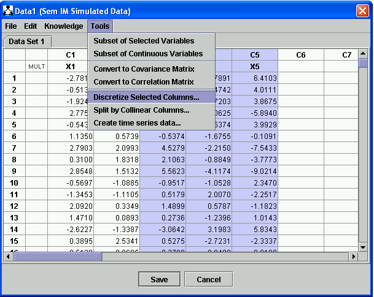
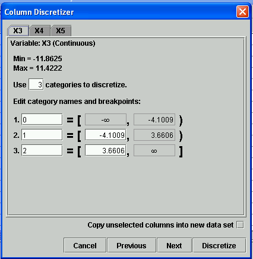
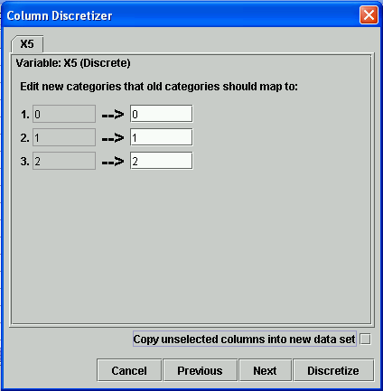
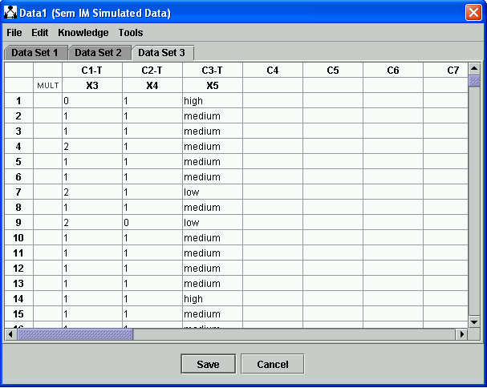

Discretizing Data |
Data can be discretized column by column in Tetrad by selecting "Discretize Selected Columns..." from the Tools menu of the data editor, which you can launch by double clicking on a Data box.
Both continuous and discrete data can be discretized. Continuous data is discretized by selecting the number of categories one want the data to have, giving the categories names, and selecting cut points. For categories C1, C2, and C3, cut points c1 and c2 will be needed. Real values in the column < c1 will be mapped to C1; real values in [c1, c2) will be mapped to C2, and real values >= c2 will be mapped to C3. Discrete columns are discretized, by contrast, by simply mapping old categories to new ones, by name.
Consider this data set, simulated from a SEM instantiated model. There are five variables: X1, X2, X3, X4 and X5. Three of the columns (X3, X4 and X5) are selected, and the "Discretize Selected Columns..." item is shown:

After selecting the "Discretize Selected Columns..." item, the following dialog appears:

The "Next" and "Previous" buttons at the bottoms allow one to navigate through the selected columns. For each columns, one must select the number of discretized categories, the names for those categories, and the cut points for those categories. To be helpful, the minimum and maximum value for the column are displayed, default category names in the sequence "0", "1", ... are chosen, and cut points are chosen that evenly divide up the range [Min, Max]. At the bottom of the dialog is a checkbox labeled "Copy unselected columns into new data set." If you check this, the new data set created by the discretizer will contain all of the variables of the old one, with discretized columns changed. Let's leave this unchecked for now. If you accept all of the defaults, with the checkbox unchecked, a new data set is created comprised of discretized versions of X3, X4, and X5, and this new data set is added as a new tab to the Data Editor:
Since this tab is selected, it because immediately available to searches, estimations, etc. To see how discretization of discrete colums works, we can further discretize X5 in this data set by selecting it and choosing "Discretize Selected Columns..." from the Tools menu again. The following dialog appears:

We can then specify the category name each category in the column should be mapped to, this time copying over unselected columns:

If you now click "Discretize," a new data set will be added to the Data Editor in a new tab:

...OLD TEXT:
Sometimesthe values of two variables in a data set are strongly correlated. Climate data, for example, may have many essentailly redundant variables. Such "multicollinearities" make data analysis difficult, and make model search especially difficult.. There are various heuristic techniques for dealing with the problem, but Tetrad offers a simple device. If you click on "Split by collinear columns, the program will prompt you for a correlation value. If you enter a value, say 0.95, the program will create a separate data set for every pair of variables whosecorrelation is as large or larger than that value. If, for example, variables X2 and X4 are so correlated, and variables X1 and X5 are also so correlated, you will obtain 4 distinct data sets, one with X1, X2, X3, one with X1, X4, X3, one with X2, X3, X5 and one with X4, X3, X5.. Be careful with this function: in a large data set, if the correlation is set too low, a huge number of data files might be created.
The first column shows the number of mulitples of each case in small lettering. Changing that sumber, e.g., from 1 to 5, will add four more cases with the same values to the data set. A data set with each case repeated according to the multiplier is created when you connect the Data box to a Manipulate Data box.